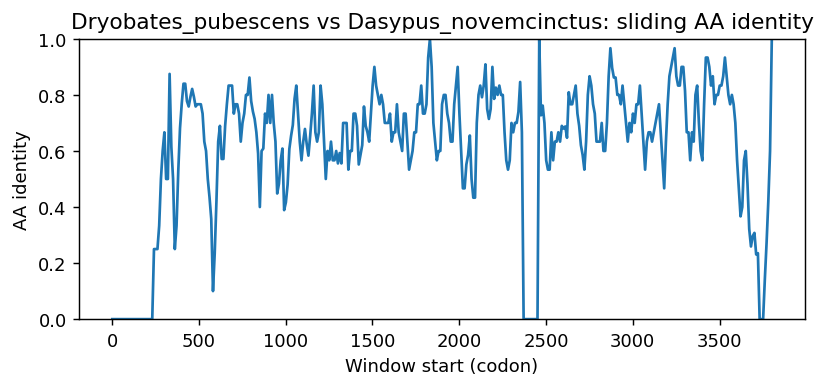
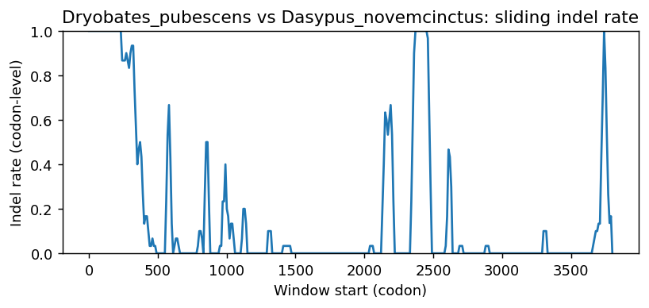
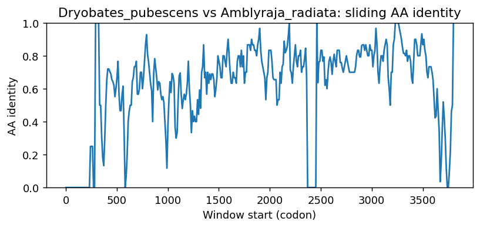
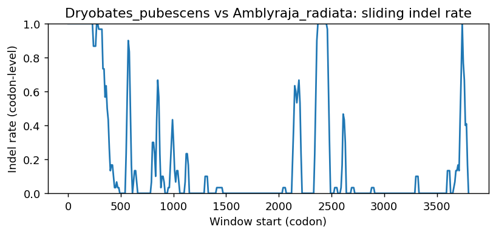
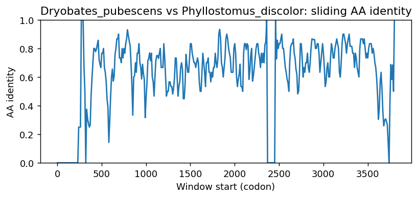
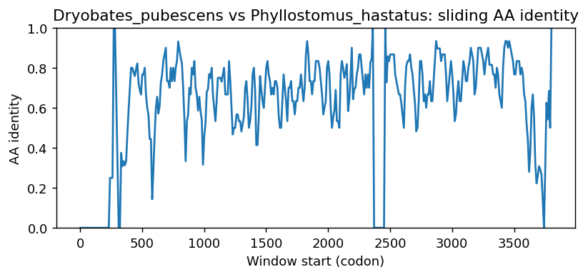
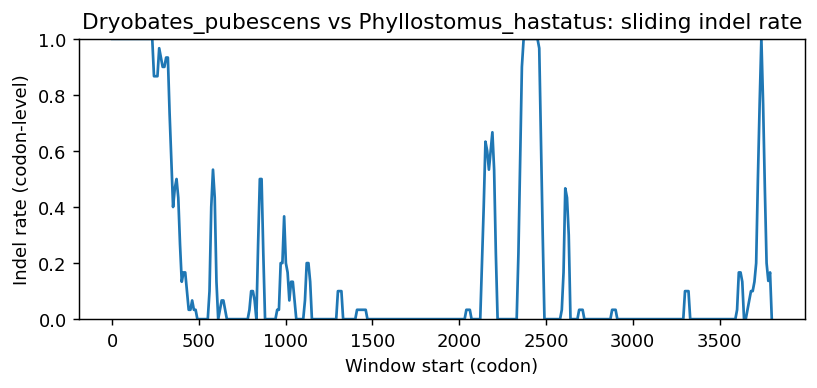
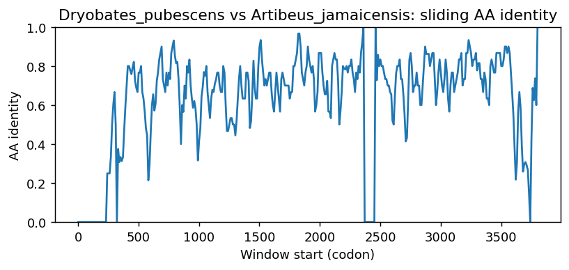
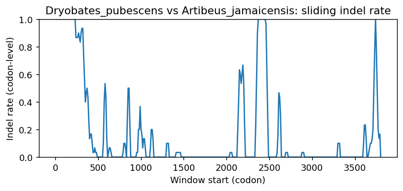
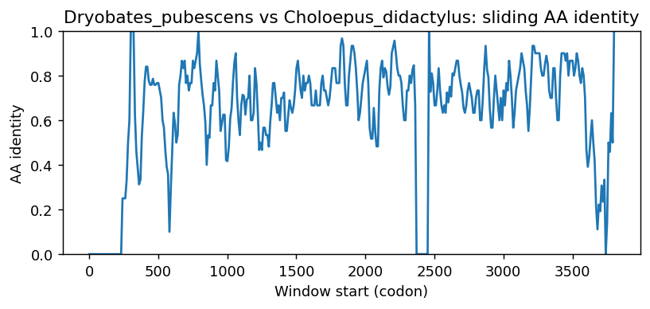

Ortholog Divergence Report
Input: FREM2.valid.longest.fa · N sequences: 359 · Aligned length: 3802 codons
Reference: Dryobates_pubescens
Quick risk overview
- LOW: 0
- INTERMEDIATE: 0
- HIGH: 64261


Composition & complexity per sequence
Saved as per_sequence_composition.csv. High low-complexity or repeat content can reduce BLAST sensitivity due to soft masking.
| id | GC | GC skew | CpG dens. | AA LCR frac | NT repeat frac | AA len | CDS len |
|---|---|---|---|---|---|---|---|
| Dryobates_pubescens | 0.49014 | 0.02582 | 0.02405 | 0.03765 | 0.73447 | 3161 | 9483 |
| Kogia_breviceps | 0.5243 | 0.0 | 0.03706 | 0.04441 | 0.74404 | 3175 | 9525 |
| Aquila_chrysaetos_chrysaetos | 0.50005 | 0.02784 | 0.02774 | 0.04967 | 0.73173 | 3161 | 9483 |
| Mandrillus_leucophaeus | 0.5082 | 0.00766 | 0.02755 | 0.04606 | 0.74648 | 3170 | 9510 |
| Orcinus_orca | 0.52096 | 0.00504 | 0.03467 | 0.04003 | 0.74966 | 3173 | 9519 |
| Sciurus_carolinensis | 0.51162 | -0.00699 | 0.02619 | 0.02272 | 0.7465 | 3169 | 9507 |
| Cricetulus_griseus | 0.50802 | 0.01309 | 0.02449 | 0.02597 | 0.75617 | 3158 | 9474 |
| Erinaceus_europaeus | 0.5095 | 0.00515 | 0.02604 | 0.01732 | 0.74929 | 3175 | 9525 |
| Pteropus_giganteus | 0.47895 | 0.01271 | 0.01827 | 0.01575 | 0.74005 | 3175 | 9525 |
| Cygnus_olor | 0.49826 | 0.03111 | 0.02742 | 0.04682 | 0.74059 | 3161 | 9483 |
| Ursus_maritimus | 0.5302 | -0.00139 | 0.03929 | 0.03278 | 0.75313 | 3173 | 9519 |
| Corvus_kubaryi | 0.50653 | 0.02496 | 0.02761 | 0.05436 | 0.74347 | 3164 | 9492 |
| Psammomys_obesus | 0.54095 | 0.00917 | 0.04011 | 0.02343 | 0.76145 | 3158 | 9474 |
| Sturnus_vulgaris | 0.51597 | 0.01777 | 0.03091 | 0.0615 | 0.73269 | 3236 | 9708 |
| Patagioenas_fasciata | 0.49901 | 0.0307 | 0.02793 | 0.05658 | 0.73012 | 3199 | 9597 |
| Pongo_pygmaeus | 0.50389 | 0.0071 | 0.02671 | 0.03754 | 0.749 | 3170 | 9510 |
| Mesocricetus_auratus | 0.53572 | 0.00117 | 0.03625 | 0.02671 | 0.75215 | 3182 | 9546 |
| Gracilinanus_agilis | 0.46988 | 0.01542 | 0.01483 | 0.02717 | 0.72147 | 2944 | 8832 |
| Phaenicophaeus_curvirostris | 0.50169 | 0.04055 | 0.0331 | 0.05408 | 0.73709 | 3162 | 9486 |
| Eleutherodactylus_coqui | 0.45312 | 0.03571 | 0.02272 | 0.04564 | 0.73567 | 3111 | 9333 |
| Melospiza_georgiana | 0.52024 | 0.01196 | 0.03163 | 0.04681 | 0.73192 | 3162 | 9486 |
| Amblyraja_radiata | 0.59633 | -0.01438 | 0.07109 | 0.03828 | 0.75137 | 3109 | 9327 |
| Mustela_lutreola | 0.51964 | -0.00283 | 0.03361 | 0.03781 | 0.74963 | 3174 | 9522 |
| Lynx_rufus | 0.53144 | 0.00237 | 0.04095 | 0.04 | 0.74299 | 3175 | 9525 |
| Mirounga_leonina | 0.52555 | 0.00299 | 0.0362 | 0.03997 | 0.73717 | 3177 | 9531 |
| Ursus_arctos | 0.53094 | -0.0004 | 0.03961 | 0.03278 | 0.75071 | 3173 | 9519 |
| Nyctibius_grandis | 0.49905 | 0.02597 | 0.02666 | 0.04077 | 0.73188 | 3164 | 9492 |
| Tyto_alba | 0.49979 | 0.02299 | 0.02773 | 0.05882 | 0.73044 | 3162 | 9486 |
| Muntiacus_reevesi | 0.53111 | -0.00079 | 0.04004 | 0.0331 | 0.73024 | 3172 | 9516 |
| Gavia_stellata | 0.49826 | 0.03046 | 0.02582 | 0.05058 | 0.74265 | 3163 | 9489 |
| Apus_apus | 0.49495 | 0.0317 | 0.02211 | 0.04927 | 0.73763 | 3166 | 9498 |
| Puma_concolor | 0.52871 | 0.0004 | 0.03853 | 0.03465 | 0.73417 | 3175 | 9525 |
| Delphinus_delphis | 0.5218 | 0.00342 | 0.03488 | 0.04003 | 0.74924 | 3173 | 9519 |
| Budorcas_taxicolor | 0.52596 | -0.0014 | 0.03783 | 0.03373 | 0.73655 | 3172 | 9516 |
| Caretta_caretta | 0.52649 | 0.02501 | 0.03371 | 0.05276 | 0.73007 | 3165 | 9495 |
| Macaca_thibetana_thibetana | 0.50915 | 0.00743 | 0.02818 | 0.04259 | 0.74879 | 3170 | 9510 |
| Oryx_dammah | 0.5304 | 0.00151 | 0.03994 | 0.02559 | 0.72908 | 3322 | 9966 |
| Agelaius_phoeniceus | 0.51601 | 0.01756 | 0.03003 | 0.04741 | 0.73894 | 3164 | 9492 |
| Catharus_ustulatus | 0.51011 | 0.01404 | 0.0275 | 0.0531 | 0.73704 | 3164 | 9492 |
| Rissa_tridactyla | 0.49989 | 0.02803 | 0.02824 | 0.0493 | 0.73778 | 3164 | 9492 |
| Leopardus_geoffroyi | 0.52945 | 0.00099 | 0.03979 | 0.04 | 0.74005 | 3175 | 9525 |
| Sorex_araneus | 0.53978 | 0.00058 | 0.04461 | 0.04377 | 0.72848 | 3176 | 9528 |
| Perognathus_longimembris_pacificus | 0.52244 | -0.01368 | 0.03354 | 0.02397 | 0.74498 | 3171 | 9513 |
| Chrysochloris_asiatica | 0.499 | 0.01157 | 0.02278 | 0.02583 | 0.76136 | 3175 | 9525 |
| Chionomys_nivalis | 0.54117 | 0.00605 | 0.04339 | 0.02058 | 0.75966 | 3158 | 9474 |
| Prionailurus_bengalensis | 0.52924 | 0.0002 | 0.03927 | 0.03465 | 0.73522 | 3175 | 9525 |
| Hyaena_hyaena | 0.53748 | -0.00529 | 0.04201 | 0.03632 | 0.74732 | 3166 | 9498 |
| Falco_peregrinus | 0.50253 | 0.02052 | 0.02862 | 0.05745 | 0.73106 | 3168 | 9504 |
| Pan_paniscus | 0.50437 | 0.0098 | 0.02556 | 0.0385 | 0.74745 | 3169 | 9507 |
| Hippopotamus_amphibius_kiboko | 0.53025 | -0.00337 | 0.0375 | 0.03529 | 0.75793 | 3174 | 9522 |
| Bubalus_bubalis | 0.52475 | -0.00558 | 0.03852 | 0.03768 | 0.72821 | 3185 | 9555 |
| Harpia_harpyja | 0.50069 | 0.02696 | 0.02658 | 0.05378 | 0.73141 | 3161 | 9483 |
| Nycticebus_coucang | 0.53502 | 0.00197 | 0.03533 | 0.02997 | 0.7511 | 3170 | 9510 |
| Myotis_daubentonii | 0.47368 | 0.00688 | 0.01471 | 0.02994 | 0.75355 | 3173 | 9519 |
| Manacus_candei | 0.49353 | 0.02666 | 0.02632 | 0.05557 | 0.73287 | 3167 | 9501 |
| Sus_scrofa | 0.53865 | 0.00019 | 0.03939 | 0.04348 | 0.73398 | 3174 | 9522 |
| Eubalaena_glacialis | 0.51638 | -0.00102 | 0.03256 | 0.05167 | 0.7469 | 3174 | 9522 |
| Melospiza_melodia_melodia | 0.52042 | 0.01338 | 0.03145 | 0.0459 | 0.73209 | 3159 | 9477 |
| Indicator_indicator | 0.49089 | 0.02896 | 0.02349 | 0.04265 | 0.73049 | 3165 | 9495 |
| Pleurodeles_waltl | 0.48559 | 0.02375 | 0.02712 | 0.03043 | 0.7477 | 3122 | 9366 |
| Rhinatrema_bivittatum | 0.47129 | 0.02803 | 0.02376 | 0.03835 | 0.75115 | 3129 | 9387 |
| Corvus_moneduloides | 0.50716 | 0.0241 | 0.02834 | 0.05436 | 0.74178 | 3164 | 9492 |
| Phacochoerus_africanus | 0.54012 | -0.00175 | 0.03981 | 0.04064 | 0.73766 | 3174 | 9522 |
| Diceros_bicornis_minor | 0.50609 | 0.01307 | 0.02731 | 0.02678 | 0.74858 | 3174 | 9522 |
| Pipra_filicauda | 0.49458 | 0.02575 | 0.02684 | 0.05557 | 0.73698 | 3167 | 9501 |
| Rattus_norvegicus | 0.53167 | 0.01013 | 0.03579 | 0.01583 | 0.76335 | 3158 | 9474 |
| Theropithecus_gelada | 0.50683 | 0.00705 | 0.02724 | 0.04448 | 0.74953 | 3170 | 9510 |
| Haemorhous_mexicanus | 0.51237 | 0.01336 | 0.03012 | 0.0515 | 0.74155 | 3165 | 9495 |
| Prinia_subflava | 0.51665 | 0.0208 | 0.0315 | 0.04772 | 0.73515 | 3164 | 9492 |
| Galeopterus_variegatus | 0.51505 | 0.00248 | 0.03201 | 0.0319 | 0.74237 | 3135 | 9405 |
| Vidua_macroura | 0.50653 | 0.01705 | 0.02792 | 0.04583 | 0.72956 | 3164 | 9492 |
| Falco_biarmicus | 0.50237 | 0.01948 | 0.02821 | 0.05684 | 0.7295 | 3167 | 9501 |
| Ochotona_curzoniae | 0.51672 | 0.00041 | 0.03271 | 0.02902 | 0.75426 | 3170 | 9510 |
| Zalophus_californianus | 0.52427 | 0.0032 | 0.0366 | 0.03397 | 0.75024 | 3179 | 9537 |
| Oxyura_jamaicensis | 0.5 | 0.026 | 0.02736 | 0.04434 | 0.73763 | 3180 | 9540 |
| Alexandromys_fortis | 0.543 | -0.00272 | 0.04538 | 0.02058 | 0.75636 | 3159 | 9477 |
| Neopsephotus_bourkii | 0.48979 | 0.03525 | 0.0219 | 0.05054 | 0.74026 | 3166 | 9498 |
| Cervus_canadensis | 0.53026 | -0.00674 | 0.04004 | 0.03972 | 0.72825 | 3172 | 9516 |
| Hylobates_moloch | 0.5051 | 0.00477 | 0.02609 | 0.04406 | 0.74438 | 3041 | 9123 |
| Capra_hircus | 0.52958 | -0.00368 | 0.03835 | 0.02984 | 0.7327 | 3251 | 9753 |
| Molothrus_aeneus | 0.51443 | 0.01986 | 0.0294 | 0.0512 | 0.74083 | 3164 | 9492 |
| Myotis_myotis | 0.47458 | 0.00307 | 0.01531 | 0.035 | 0.75031 | 3200 | 9600 |
| Camelus_bactrianus | 0.53086 | 0.0016 | 0.03736 | 0.0265 | 0.74266 | 3132 | 9396 |
| Arvicanthis_niloticus | 0.52333 | 0.01251 | 0.03199 | 0.0266 | 0.75575 | 3158 | 9474 |
| Dromaius_novaehollandiae | 0.49737 | 0.03792 | 0.02581 | 0.04172 | 0.72314 | 3164 | 9492 |
| Pelobates_fuscus | 0.44967 | 0.03109 | 0.01751 | 0.02241 | 0.72836 | 3123 | 9369 |
| Chinchilla_lanigera | 0.52541 | -0.0062 | 0.03498 | 0.03781 | 0.74837 | 3174 | 9522 |
| Propithecus_coquereli | 0.52652 | -0.00272 | 0.03419 | 0.03308 | 0.75323 | 3023 | 9069 |
| Parus_major | 0.51022 | 0.01755 | 0.02824 | 0.04077 | 0.73715 | 3164 | 9492 |
| Gopherus_evgoodei | 0.51837 | 0.02423 | 0.03051 | 0.04148 | 0.73211 | 3158 | 9474 |
| Canis_lupus_familiaris | 0.52509 | 0.01122 | 0.03587 | 0.04071 | 0.74587 | 3169 | 9507 |
| Hipposideros_armiger | 0.50625 | 0.01661 | 0.02786 | 0.02681 | 0.73184 | 3171 | 9513 |
| Apteryx_mantelli | 0.49541 | 0.03453 | 0.02418 | 0.04118 | 0.724 | 3157 | 9471 |
| Chaetura_pelagica | 0.47263 | 0.03415 | 0.01468 | 0.03115 | 0.7397 | 2953 | 8859 |
| Ammospiza_caudacuta | 0.52005 | 0.0172 | 0.03147 | 0.04926 | 0.73024 | 3167 | 9501 |
| Dipodomys_merriami | 0.52045 | -0.00667 | 0.03091 | 0.03311 | 0.74876 | 3171 | 9513 |
| Dermochelys_coriacea | 0.52744 | 0.02101 | 0.03526 | 0.05795 | 0.7282 | 3158 | 9474 |
| Pyrgilauda_ruficollis | 0.51222 | 0.01851 | 0.03013 | 0.05025 | 0.73883 | 3164 | 9492 |
| Marmota_monax | 0.5071 | -0.00912 | 0.02534 | 0.02302 | 0.75854 | 3171 | 9513 |
| Tupaia_chinensis | 0.50358 | -0.00355 | 0.02776 | 0.03123 | 0.74522 | 3170 | 9510 |
| Dipodomys_ordii | 0.51944 | -0.00668 | 0.03037 | 0.03373 | 0.74632 | 3172 | 9516 |
| Chroicocephalus_ridibundus | 0.50021 | 0.02906 | 0.02845 | 0.04804 | 0.73989 | 3164 | 9492 |
| Myiozetetes_cayanensis | 0.49811 | 0.02554 | 0.02692 | 0.05962 | 0.73586 | 3170 | 9510 |
| Ambystoma_mexicanum | 0.52587 | 0.00346 | 0.04245 | 0.02983 | 0.7462 | 3118 | 9354 |
| Cinclus_cinclus | 0.50864 | 0.02568 | 0.02824 | 0.0493 | 0.73725 | 3164 | 9492 |
| Bombina_bombina | 0.42616 | 0.04994 | 0.01647 | 0.03754 | 0.73094 | 3117 | 9351 |
| Anomalospiza_imberbis | 0.50585 | 0.01875 | 0.02804 | 0.04395 | 0.73422 | 3163 | 9489 |
| Sylvia_atricapilla | 0.5079 | 0.01805 | 0.02634 | 0.04551 | 0.73209 | 3164 | 9492 |
| Taeniopygia_guttata | 0.50485 | 0.02129 | 0.02792 | 0.05057 | 0.7342 | 3164 | 9492 |
| Malaclemys_terrapin_pileata | 0.5206 | 0.02551 | 0.02972 | 0.0392 | 0.73042 | 3163 | 9489 |
| Sturnira_hondurensis | 0.64816 | -0.01817 | 0.08687 | 0.04669 | 0.73417 | 3170 | 9510 |
| Haliaeetus_leucocephalus | 0.50026 | 0.03058 | 0.02723 | 0.04463 | 0.72818 | 3159 | 9477 |
| Grammomys_surdaster | 0.5229 | 0.00807 | 0.03104 | 0.01773 | 0.76399 | 3158 | 9474 |
| Nanorana_parkeri | 0.45779 | 0.03334 | 0.02124 | 0.04259 | 0.73519 | 3123 | 9369 |
| Dasypus_novemcinctus | 0.67604 | -0.00514 | 0.09904 | 0.06448 | 0.72925 | 3164 | 9492 |
| Elephantulus_edwardii | 0.55952 | -0.01673 | 0.04385 | 0.03691 | 0.73954 | 3170 | 9510 |
| Symphalangus_syndactylus | 0.50421 | 0.00751 | 0.02547 | 0.0404 | 0.74548 | 3168 | 9504 |
| Neofelis_nebulosa | 0.53008 | 0.00059 | 0.03969 | 0.03937 | 0.74079 | 3175 | 9525 |
| Spea_bombifrons | 0.45728 | 0.01543 | 0.02492 | 0.03914 | 0.73821 | 3117 | 9351 |
| Ailuropoda_melanoleuca | 0.52693 | 0.00288 | 0.03749 | 0.03152 | 0.74831 | 3299 | 9897 |
| Prionailurus_viverrinus | 0.52913 | 0.0004 | 0.03916 | 0.03465 | 0.73585 | 3175 | 9525 |
| Ovis_canadensis | 0.52659 | -0.0002 | 0.0372 | 0.03058 | 0.73035 | 3172 | 9516 |
| Tachyglossus_aculeatus | 0.66185 | -0.02691 | 0.09754 | 0.08454 | 0.69568 | 3182 | 9546 |
| Lagopus_muta | 0.49142 | 0.03448 | 0.02495 | 0.04705 | 0.75182 | 3167 | 9501 |
| Pteropus_alecto | 0.47979 | 0.014 | 0.01858 | 0.01543 | 0.73942 | 3175 | 9525 |
| Mustela_nigripes | 0.52069 | -0.00121 | 0.03393 | 0.03403 | 0.74974 | 3174 | 9522 |
| Corvus_hawaiiensis | 0.50685 | 0.02349 | 0.02761 | 0.05405 | 0.74168 | 3164 | 9492 |
| Vulpes_lagopus | 0.52854 | 0.01472 | 0.03848 | 0.05046 | 0.74572 | 3171 | 9513 |
| Mus_musculus | 0.5307 | -0.00099 | 0.03471 | 0.0193 | 0.76276 | 3160 | 9480 |
| Miniopterus_natalensis | 0.47815 | 0.00837 | 0.01664 | 0.03223 | 0.7327 | 3165 | 9495 |
| Lontra_canadensis | 0.52237 | -0.00121 | 0.03424 | 0.03403 | 0.74848 | 3174 | 9522 |
| Lonchura_striata | 0.50643 | 0.0179 | 0.02815 | 0.05281 | 0.7257 | 3162 | 9486 |
| Vicugna_pacos | 0.52511 | 0.00317 | 0.03581 | 0.03259 | 0.74138 | 3007 | 9021 |
| Rhea_pennata | 0.48554 | 0.0413 | 0.02291 | 0.04402 | 0.73675 | 3158 | 9474 |
| Onychomys_torridus | 0.52649 | 0.00722 | 0.03294 | 0.00982 | 0.73348 | 3158 | 9474 |
| Orycteropus_afer_afer | 0.49159 | 0.00513 | 0.02102 | 0.02932 | 0.74748 | 3172 | 9516 |
| Ictidomys_tridecemlineatus | 0.51309 | 0.0002 | 0.02923 | 0.02681 | 0.74982 | 3171 | 9513 |
| Vulpes_vulpes | 0.52759 | 0.01614 | 0.03732 | 0.04636 | 0.74267 | 3171 | 9513 |
| Molothrus_ater | 0.51391 | 0.02091 | 0.02919 | 0.0512 | 0.74189 | 3164 | 9492 |
| Phalacrocorax_carbo | 0.50089 | 0.02458 | 0.02695 | 0.06694 | 0.73487 | 3167 | 9501 |
| Myotis_yumanensis | 0.47413 | 0.00244 | 0.01462 | 0.0265 | 0.75373 | 3170 | 9510 |
| Trachypithecus_francoisi | 0.50568 | 0.00645 | 0.02608 | 0.047 | 0.74942 | 3170 | 9510 |
| Aphelocoma_coerulescens | 0.50816 | 0.02052 | 0.02718 | 0.0515 | 0.7446 | 3165 | 9495 |
| Eulemur_rufifrons | 0.52639 | 0.0 | 0.03418 | 0.02808 | 0.75973 | 3170 | 9510 |
| Rattus_rattus | 0.53283 | 0.0103 | 0.03631 | 0.02248 | 0.76641 | 3158 | 9474 |
| Chlorocebus_sabaeus | 0.50662 | 0.00581 | 0.02692 | 0.04606 | 0.75079 | 3170 | 9510 |
| Bubalus_kerabau | 0.52449 | -0.00381 | 0.03805 | 0.03815 | 0.72919 | 3172 | 9516 |
| Colius_striatus | 0.50053 | 0.02463 | 0.02866 | 0.04583 | 0.74568 | 3164 | 9492 |
| Hyperolius_riggenbachi | 0.47472 | 0.03384 | 0.02796 | 0.0347 | 0.75011 | 3112 | 9336 |
| Mesoplodon_densirostris | 0.51544 | 0.00244 | 0.03224 | 0.04568 | 0.74627 | 3174 | 9522 |
| Equus_caballus | 0.50819 | 0.00434 | 0.02909 | 0.03592 | 0.749 | 3174 | 9522 |
| Numida_meleagris | 0.49321 | 0.03438 | 0.02696 | 0.04423 | 0.75714 | 3165 | 9495 |
| Panthera_leo | 0.53302 | 0.00295 | 0.04158 | 0.03465 | 0.7432 | 3175 | 9525 |
| Melopsittacus_undulatus | 0.48473 | 0.03215 | 0.0218 | 0.04991 | 0.74374 | 3166 | 9498 |
| Myotis_lucifugus | 0.47566 | 0.00334 | 0.01492 | 0.03048 | 0.74984 | 3150 | 9450 |
| Serinus_canaria | 0.51507 | 0.01411 | 0.03066 | 0.0512 | 0.73704 | 3164 | 9492 |
| Manis_javanica | 0.59655 | -0.01052 | 0.06831 | 0.06799 | 0.73497 | 3133 | 9399 |
| Mastomys_coucha | 0.52428 | 0.00664 | 0.03156 | 0.02818 | 0.76071 | 3158 | 9474 |
| Cynocephalus_volans | 0.51722 | 0.00386 | 0.03319 | 0.03308 | 0.74659 | 3174 | 9522 |
| Cuculus_canorus | 0.49884 | 0.03593 | 0.03163 | 0.05693 | 0.74626 | 3162 | 9486 |
| Capricornis_sumatraensis | 0.52648 | 0.0004 | 0.03836 | 0.03058 | 0.73644 | 3172 | 9516 |
| Pongo_abelii | 0.5041 | 0.00626 | 0.02671 | 0.03754 | 0.74826 | 3170 | 9510 |
| Gallus_gallus | 0.49432 | 0.0281 | 0.02631 | 0.04672 | 0.75305 | 3168 | 9504 |
| Falco_cherrug | 0.50258 | 0.02031 | 0.02821 | 0.05273 | 0.72929 | 3167 | 9501 |
| Rana_temporaria | 0.46423 | 0.02833 | 0.02332 | 0.04299 | 0.73607 | 3117 | 9351 |
| Pezoporus_flaviventris | 0.48805 | 0.03084 | 0.02221 | 0.04357 | 0.73876 | 3167 | 9501 |
| Bos_javanicus | 0.52711 | -0.00758 | 0.03826 | 0.03184 | 0.72636 | 3172 | 9516 |
| Trachemys_scripta_elegans | 0.52009 | 0.02514 | 0.02964 | 0.0386 | 0.7273 | 3161 | 9483 |
| Mustela_erminea | 0.5209 | -0.00121 | 0.03403 | 0.03403 | 0.75205 | 3174 | 9522 |
| Tursiops_truncatus | 0.52222 | 0.00302 | 0.03478 | 0.04003 | 0.75029 | 3173 | 9519 |
| Coturnix_japonica | 0.49204 | 0.0332 | 0.0254 | 0.03952 | 0.75298 | 3163 | 9489 |
| Puma_yagouaroundi | 0.52829 | 0.00159 | 0.03832 | 0.03465 | 0.73638 | 3175 | 9525 |
| Acomys_russatus | 0.52584 | 0.01585 | 0.03197 | 0.01551 | 0.75865 | 3160 | 9480 |
| Oryctolagus_cuniculus | 0.50797 | 0.00208 | 0.02427 | 0.02627 | 0.75594 | 3159 | 9477 |
| Callithrix_jacchus | 0.51335 | 0.00778 | 0.02976 | 0.03438 | 0.73449 | 3170 | 9510 |
| Saccopteryx_bilineata | 0.50908 | -0.00557 | 0.02782 | 0.02992 | 0.74761 | 3175 | 9525 |
| Falco_rusticolus | 0.50247 | 0.02011 | 0.02811 | 0.05273 | 0.72929 | 3167 | 9501 |
| Mustela_putorius_furo | 0.52006 | -0.00162 | 0.03371 | 0.03529 | 0.74879 | 3174 | 9522 |
| Marmota_marmota_marmota | 0.50684 | -0.01017 | 0.02631 | 0.02304 | 0.76126 | 3168 | 9504 |
| Nannospalax_galili | 0.51588 | 0.00815 | 0.0286 | 0.03502 | 0.75815 | 3170 | 9510 |
| Calypte_anna | 0.50168 | 0.02623 | 0.02559 | 0.04296 | 0.73184 | 3166 | 9498 |
| Gopherus_flavomarginatus | 0.51731 | 0.02469 | 0.02914 | 0.04148 | 0.72683 | 3158 | 9474 |
| Poecile_atricapillus | 0.50843 | 0.01823 | 0.02845 | 0.03951 | 0.73841 | 3164 | 9492 |
| Monodon_monoceros | 0.51875 | 0.00284 | 0.03373 | 0.03876 | 0.74945 | 3173 | 9519 |
| Pseudophryne_corroboree | 0.45513 | 0.05253 | 0.02091 | 0.03377 | 0.73614 | 3109 | 9327 |
| Acinonyx_jubatus | 0.52693 | 0.0002 | 0.03759 | 0.03465 | 0.73879 | 3175 | 9525 |
| Meriones_unguiculatus | 0.54416 | 0.0033 | 0.04116 | 0.02691 | 0.75847 | 3159 | 9477 |
| Pan_troglodytes | 0.50405 | 0.00918 | 0.02525 | 0.0385 | 0.74703 | 3169 | 9507 |
| Camelus_ferus | 0.53598 | 0.00627 | 0.03961 | 0.03782 | 0.73894 | 3173 | 9519 |
| Desmodus_rotundus | 0.63332 | -0.01578 | 0.08279 | 0.04292 | 0.73788 | 3169 | 9507 |
| Lepidothrix_coronata | 0.49416 | 0.02748 | 0.02579 | 0.05178 | 0.73729 | 3167 | 9501 |
| Ammospiza_nelsoni | 0.52026 | 0.01639 | 0.03168 | 0.04926 | 0.73003 | 3167 | 9501 |
| Choloepus_didactylus | 0.64402 | -0.01292 | 0.08208 | 0.0689 | 0.73483 | 3164 | 9492 |
| Vidua_chalybeata | 0.50611 | 0.01957 | 0.02782 | 0.04583 | 0.73019 | 3164 | 9492 |
| Athene_cunicularia | 0.48395 | 0.02746 | 0.02064 | 0.03404 | 0.73625 | 3085 | 9255 |
| Accipiter_gentilis | 0.50016 | 0.0308 | 0.02723 | 0.044 | 0.72945 | 3159 | 9477 |
| Alligator_sinensis | 0.48258 | 0.02431 | 0.01835 | 0.01916 | 0.73775 | 2870 | 8610 |
| Zonotrichia_leucophrys_gambelii | 0.52075 | 0.01558 | 0.0314 | 0.05025 | 0.73378 | 3164 | 9492 |
| Pogoniulus_pusillus | 0.48304 | 0.02726 | 0.02065 | 0.03224 | 0.74041 | 3164 | 9492 |
| Panthera_tigris | 0.53333 | 0.00118 | 0.04221 | 0.03465 | 0.74068 | 3175 | 9525 |
| Panthera_uncia | 0.53197 | 0.00178 | 0.04116 | 0.03465 | 0.7473 | 3175 | 9525 |
| Ranitomeya_imitator | 0.45634 | 0.04485 | 0.02325 | 0.03761 | 0.75163 | 3111 | 9333 |
| Falco_naumanni | 0.50174 | 0.01699 | 0.02905 | 0.05968 | 0.72971 | 3167 | 9501 |
| Otolemur_garnettii | 0.53266 | 0.00276 | 0.03514 | 0.03061 | 0.74282 | 3169 | 9507 |
| Myodes_glareolus | 0.5437 | -0.00175 | 0.0437 | 0.0228 | 0.7566 | 3158 | 9474 |
| Equus_asinus | 0.50893 | 0.0066 | 0.02993 | 0.03592 | 0.74984 | 3174 | 9522 |
| Antechinus_flavipes | 0.45844 | 0.03872 | 0.01253 | 0.02976 | 0.72003 | 3192 | 9576 |
| Mauremys_mutica | 0.5205 | 0.02531 | 0.03046 | 0.03731 | 0.7319 | 3163 | 9489 |
| Dendropsophus_ebraccatus | 0.46804 | 0.01624 | 0.02602 | 0.04112 | 0.73873 | 3113 | 9339 |
| Corvus_brachyrhynchos | 0.48226 | 0.03032 | 0.0187 | 0.03196 | 0.74691 | 2941 | 8823 |
| Centrocercus_urophasianus | 0.49258 | 0.03718 | 0.02568 | 0.04768 | 0.74897 | 3167 | 9501 |
| Manis_pentadactyla | 0.60187 | -0.01553 | 0.07203 | 0.06947 | 0.73242 | 3138 | 9414 |
| Tympanuchus_pallidicinctus | 0.49316 | 0.03587 | 0.02559 | 0.04359 | 0.74953 | 3166 | 9498 |
| Eschrichtius_robustus | 0.523 | -0.00321 | 0.0355 | 0.04915 | 0.74659 | 3174 | 9522 |
| Neopelma_chrysocephalum | 0.49442 | 0.02791 | 0.02571 | 0.05942 | 0.73262 | 3164 | 9492 |
| Macaca_mulatta | 0.50883 | 0.0093 | 0.02787 | 0.04196 | 0.74858 | 3170 | 9510 |
| Pteropus_vampyrus | 0.47937 | 0.01226 | 0.01848 | 0.01575 | 0.73743 | 3175 | 9525 |
| Phyllostomus_discolor | 0.70105 | -0.00975 | 0.11231 | 0.06246 | 0.72271 | 3170 | 9510 |
| Pseudopodoces_humilis | 0.51492 | 0.01938 | 0.03076 | 0.04259 | 0.73282 | 3240 | 9720 |
| Dama_dama | 0.53037 | -0.00416 | 0.04036 | 0.03878 | 0.72856 | 3172 | 9516 |
| Cercocebus_atys | 0.50833 | 0.00309 | 0.02756 | 0.04621 | 0.74641 | 3181 | 9543 |
| Sapajus_apella | 0.50515 | 0.00999 | 0.02619 | 0.02082 | 0.74385 | 3170 | 9510 |
| Loxodonta_africana | 0.52363 | 0.00762 | 0.03203 | 0.02363 | 0.7447 | 3174 | 9522 |
| Microcebus_murinus | 0.53249 | -0.00039 | 0.03733 | 0.0306 | 0.74784 | 3170 | 9510 |
| Anas_acuta | 0.49699 | 0.03335 | 0.02608 | 0.04276 | 0.73245 | 3157 | 9471 |
| Mirounga_angustirostris | 0.52523 | 0.0036 | 0.0362 | 0.03997 | 0.7356 | 3177 | 9531 |
| Mus_pahari | 0.5353 | -0.00059 | 0.0363 | 0.01899 | 0.76607 | 3159 | 9477 |
| Lutra_lutra | 0.52237 | -0.00201 | 0.0334 | 0.03371 | 0.74942 | 3174 | 9522 |
| Mauremys_reevesii | 0.52044 | 0.02227 | 0.03098 | 0.03887 | 0.73146 | 3164 | 9492 |
| Pezoporus_wallicus | 0.48805 | 0.0317 | 0.02221 | 0.04484 | 0.7375 | 3167 | 9501 |
| Cyanistes_caeruleus | 0.49134 | 0.01986 | 0.02259 | 0.03454 | 0.73026 | 3040 | 9120 |
| Pipistrellus_kuhlii | 0.46868 | 0.00381 | 0.01532 | 0.03053 | 0.75123 | 3177 | 9531 |
| Pseudorca_crassidens | 0.52232 | 0.00563 | 0.03478 | 0.04003 | 0.74955 | 3173 | 9519 |
| Colobus_angolensis_palliatus | 0.50673 | 0.00664 | 0.02638 | 0.0476 | 0.74706 | 3172 | 9516 |
| Chelonia_mydas | 0.52777 | 0.02316 | 0.03415 | 0.05438 | 0.72579 | 3163 | 9489 |
| Corapipo_altera | 0.49321 | 0.02603 | 0.02516 | 0.05905 | 0.72719 | 3167 | 9501 |
| Panthera_pardus | 0.53312 | 0.00197 | 0.04168 | 0.03465 | 0.74425 | 3175 | 9525 |
| Emydura_macquarii_macquarii | 0.52208 | 0.02745 | 0.03288 | 0.04521 | 0.73843 | 3163 | 9489 |
| Mus_caroli | 0.52945 | 0.0 | 0.03389 | 0.01868 | 0.75522 | 3158 | 9474 |
| Calidris_pugnax | 0.50663 | 0.02455 | 0.03089 | 0.04587 | 0.74709 | 3270 | 9810 |
| Dipodomys_spectabilis | 0.51965 | -0.00425 | 0.03079 | 0.0372 | 0.74191 | 3172 | 9516 |
| Lagenorhynchus_obliquidens | 0.52096 | 0.00383 | 0.03425 | 0.04003 | 0.74829 | 3173 | 9519 |
| Camelus_dromedarius | 0.53602 | 0.00666 | 0.03981 | 0.03812 | 0.73714 | 3174 | 9522 |
| Pseudopipra_pipra | 0.49521 | 0.02657 | 0.02716 | 0.05557 | 0.73508 | 3167 | 9501 |
| Nyctereutes_procyonoides | 0.52369 | 0.01224 | 0.03415 | 0.05169 | 0.74336 | 3173 | 9519 |
| Phoca_vitulina | 0.52697 | 0.00339 | 0.03684 | 0.03621 | 0.73814 | 3176 | 9528 |
| Condylura_cristata | 0.50513 | 0.00952 | 0.02641 | 0.02245 | 0.74599 | 3118 | 9354 |
| Chamaea_fasciata | 0.50659 | 0.02184 | 0.02698 | 0.04142 | 0.73517 | 3163 | 9489 |
| Phocoena_sinus | 0.52159 | 0.00302 | 0.03551 | 0.04003 | 0.74892 | 3173 | 9519 |
| Homo_sapiens | 0.50542 | 0.00937 | 0.02535 | 0.0385 | 0.74608 | 3169 | 9507 |
| Macaca_fascicularis | 0.50883 | 0.00847 | 0.02797 | 0.04259 | 0.74942 | 3170 | 9510 |
| Canis_lupus_dingo | 0.52456 | 0.01183 | 0.03535 | 0.03755 | 0.74587 | 3169 | 9507 |
| Oenanthe_melanoleuca | 0.5206 | 0.01903 | 0.0312 | 0.05722 | 0.7358 | 3163 | 9489 |
| Castor_canadensis | 0.49805 | 0.00423 | 0.02347 | 0.02747 | 0.7414 | 3167 | 9501 |
| Saccopteryx_leptura | 0.51034 | -0.00473 | 0.02856 | 0.04157 | 0.74583 | 3175 | 9525 |
| Ursus_americanus | 0.5301 | -0.00159 | 0.03887 | 0.03278 | 0.74861 | 3173 | 9519 |
| Protopterus_annectens | 0.43651 | 0.03254 | 0.01933 | 0.02403 | 0.72808 | 3121 | 9363 |
| Chrysemys_picta_bellii | 0.52134 | 0.02608 | 0.03046 | 0.03889 | 0.73064 | 3163 | 9489 |
| Felis_catus | 0.52808 | 0.00239 | 0.03874 | 0.03465 | 0.73764 | 3175 | 9525 |
| Halichoerus_grypus | 0.5275 | 0.00199 | 0.03726 | 0.03526 | 0.73646 | 3176 | 9528 |
| Rhinopithecus_bieti | 0.50442 | 0.00855 | 0.02555 | 0.04416 | 0.75037 | 3170 | 9510 |
| Gorilla_gorilla_gorilla | 0.50479 | 0.00938 | 0.02598 | 0.04228 | 0.74503 | 3169 | 9507 |
| Alligator_mississippiensis | 0.51216 | 0.01954 | 0.03076 | 0.0436 | 0.72859 | 3165 | 9495 |
| Octodon_degus | 0.53073 | -0.01227 | 0.03467 | 0.02332 | 0.75376 | 3173 | 9519 |
| Sarcophilus_harrisii | 0.46245 | 0.03727 | 0.0141 | 0.02444 | 0.72506 | 3191 | 9573 |
| Emys_orbicularis | 0.52355 | 0.02456 | 0.0312 | 0.05217 | 0.72937 | 3163 | 9489 |
| Rousettus_aegyptiacus | 0.48052 | 0.01639 | 0.01974 | 0.01606 | 0.73176 | 3175 | 9525 |
| Melozone_crissalis | 0.52086 | 0.01699 | 0.03129 | 0.05088 | 0.73325 | 3164 | 9492 |
| Geotrypetes_seraphini | 0.45957 | 0.03769 | 0.02349 | 0.02518 | 0.7402 | 3137 | 9411 |
| Papio_anubis | 0.50673 | 0.0056 | 0.02703 | 0.04606 | 0.74795 | 3170 | 9510 |
| Neophocaena_asiaeorientalis_asiaeorientalis | 0.52222 | 0.00141 | 0.03604 | 0.04003 | 0.74682 | 3173 | 9519 |
| Rhinopithecus_roxellana | 0.50452 | 0.00709 | 0.02598 | 0.04543 | 0.74932 | 3170 | 9510 |
| Ceratotherium_simum_simum | 0.51163 | 0.02385 | 0.02896 | 0.03123 | 0.73922 | 2049 | 6147 |
| Neomonachus_schauinslandi | 0.52477 | 0.0044 | 0.03569 | 0.02865 | 0.74045 | 3176 | 9528 |
| Microtus_ochrogaster | 0.53895 | 0.00118 | 0.04254 | 0.0209 | 0.7566 | 3158 | 9474 |
| Apodemus_sylvaticus | 0.53255 | 0.00456 | 0.03773 | 0.02568 | 0.76221 | 3154 | 9462 |
| Grus_americana | 0.49842 | 0.02769 | 0.02613 | 0.05025 | 0.73778 | 3164 | 9492 |
| Molossus_molossus | 0.61481 | -0.0207 | 0.07322 | 0.05017 | 0.73819 | 3169 | 9507 |
| Cervus_elaphus | 0.52953 | -0.00576 | 0.03962 | 0.03972 | 0.72919 | 3172 | 9516 |
| Lagopus_leucura | 0.49374 | 0.03688 | 0.02632 | 0.04736 | 0.75097 | 3167 | 9501 |
| Hyla_sarda | 0.46399 | 0.03165 | 0.0238 | 0.04341 | 0.73323 | 3110 | 9330 |
| Gymnogyps_californianus | 0.50432 | 0.01901 | 0.02866 | 0.04646 | 0.73388 | 3164 | 9492 |
| Suricata_suricatta | 0.53025 | -0.00535 | 0.03708 | 0.02552 | 0.74459 | 3174 | 9522 |
| Balaenoptera_ricei | 0.51974 | 0.00061 | 0.03445 | 0.04537 | 0.74512 | 3174 | 9522 |
| Enhydra_lutris_kenyoni | 0.52174 | -0.00121 | 0.0335 | 0.03655 | 0.74764 | 3174 | 9522 |
| Columba_livia | 0.49642 | 0.02527 | 0.02741 | 0.05281 | 0.73645 | 3162 | 9486 |
| Equus_przewalskii | 0.50788 | 0.00496 | 0.02899 | 0.03592 | 0.75026 | 3174 | 9522 |
| Lepus_europaeus | 0.51514 | -0.00761 | 0.02803 | 0.03675 | 0.74733 | 3401 | 10203 |
| Microtus_oregoni | 0.53927 | -0.00098 | 0.04233 | 0.01393 | 0.75554 | 3158 | 9474 |
| Artibeus_jamaicensis | 0.66299 | -0.00935 | 0.09253 | 0.05167 | 0.72201 | 3174 | 9522 |
| Lemur_catta | 0.52797 | -0.00378 | 0.03439 | 0.02839 | 0.76078 | 3170 | 9510 |
| Motacilla_alba_alba | 0.51022 | 0.0192 | 0.02876 | 0.04836 | 0.73694 | 3164 | 9492 |
| Zonotrichia_albicollis | 0.49389 | 0.00966 | 0.02129 | 0.02827 | 0.73426 | 2865 | 8595 |
| Monodelphis_domestica | 0.46984 | 0.02399 | 0.01555 | 0.03757 | 0.73054 | 3194 | 9582 |
| Peromyscus_californicus_insignis | 0.53082 | 0.00736 | 0.03251 | 0.01457 | 0.74509 | 3158 | 9474 |
| Piliocolobus_tephrosceles | 0.50678 | 0.01038 | 0.02756 | 0.04197 | 0.75082 | 3169 | 9507 |
| Xenopus_tropicalis | 0.47789 | 0.01905 | 0.02656 | 0.03919 | 0.72481 | 3113 | 9339 |
| Bufo_gargarizans | 0.45849 | 0.0386 | 0.02531 | 0.04247 | 0.75043 | 3108 | 9324 |
| Odobenus_rosmarus_divergens | 0.52397 | 0.0036 | 0.0362 | 0.0277 | 0.74389 | 3177 | 9531 |
| Onychostruthus_taczanowskii | 0.51264 | 0.01973 | 0.02982 | 0.05025 | 0.73673 | 3164 | 9492 |
| Phyllostomus_hastatus | 0.69956 | -0.00826 | 0.11319 | 0.06211 | 0.72741 | 3172 | 9516 |
| Phocoena_phocoena | 0.52211 | 0.00201 | 0.03593 | 0.04003 | 0.74451 | 3173 | 9519 |
| Egretta_garzetta | 0.4807 | 0.03037 | 0.02049 | 0.02784 | 0.73333 | 2945 | 8835 |
| Peromyscus_maniculatus_bairdii | 0.529 | 0.00819 | 0.03328 | 0.01458 | 0.7401 | 3155 | 9465 |
| Eumetopias_jubatus | 0.52396 | 0.0034 | 0.03618 | 0.03366 | 0.75223 | 3179 | 9537 |
| Ornithorhynchus_anatinus | 0.67388 | -0.02498 | 0.10541 | 0.09128 | 0.68737 | 3188 | 9564 |
| Physeter_macrocephalus | 0.52409 | 0.0016 | 0.03591 | 0.04535 | 0.74394 | 3175 | 9525 |
| Phasianus_colchicus | 0.49527 | 0.02868 | 0.02673 | 0.04987 | 0.74832 | 3168 | 9504 |
| Phascolarctos_cinereus | 0.4788 | 0.03293 | 0.01849 | 0.02663 | 0.72922 | 3192 | 9576 |
| Caloenas_nicobarica | 0.49931 | 0.02364 | 0.02719 | 0.06228 | 0.73011 | 3163 | 9489 |
| Ochotona_princeps | 0.51441 | 0.00634 | 0.02999 | 0.02904 | 0.74558 | 3168 | 9504 |
| Globicephala_melas | 0.52169 | 0.00443 | 0.03478 | 0.03593 | 0.7485 | 3173 | 9519 |
| Balaenoptera_musculus | 0.52132 | -0.00121 | 0.03529 | 0.04474 | 0.74753 | 3174 | 9522 |
| Bos_taurus | 0.52764 | -0.00578 | 0.03889 | 0.03184 | 0.72667 | 3172 | 9516 |
| Talpa_occidentalis | 0.50578 | 0.02367 | 0.02773 | 0.03214 | 0.75593 | 3174 | 9522 |
| Nomascus_leucogenys | 0.50463 | 0.00688 | 0.02619 | 0.04069 | 0.74374 | 3170 | 9510 |
| Cavia_porcellus | 0.51151 | -0.00329 | 0.02828 | 0.03627 | 0.7393 | 3171 | 9513 |
| Jaculus_jaculus | 0.55345 | 0.00131 | 0.04291 | 0.03474 | 0.74524 | 3224 | 9672 |
| Melanerpes_formicivorus | 0.48994 | 0.02794 | 0.02391 | 0.04265 | 0.7366 | 3165 | 9495 |
| Haliaeetus_albicilla | 0.50005 | 0.03079 | 0.0271 | 0.0484 | 0.72793 | 3161 | 9483 |
| Pezoporus_occidentalis | 0.48795 | 0.03063 | 0.02274 | 0.042 | 0.74245 | 3167 | 9501 |
| Carlito_syrichta | 0.50537 | 0.00979 | 0.02494 | 0.04072 | 0.75684 | 3168 | 9504 |
| Corvus_cornix_cornix | 0.50716 | 0.02493 | 0.02813 | 0.05436 | 0.74431 | 3164 | 9492 |
| Aotus_nancymaae | 0.50494 | 0.01 | 0.02661 | 0.03407 | 0.7409 | 3170 | 9510 |
| Struthio_camelus | 0.49251 | 0.03534 | 0.0231 | 0.04684 | 0.73386 | 3160 | 9480 |
| Bos_indicus_x_Bos_taurus | 0.5269 | -0.00439 | 0.03857 | 0.03184 | 0.72762 | 3172 | 9516 |
| Callorhinus_ursinus | 0.52469 | 0.004 | 0.03712 | 0.03366 | 0.74877 | 3179 | 9537 |
| Trichosurus_vulpecula | 0.47943 | 0.02984 | 0.01828 | 0.01848 | 0.724 | 3192 | 9576 |
| Passer_montanus | 0.51405 | 0.0172 | 0.03084 | 0.05273 | 0.74013 | 3167 | 9501 |
| Petaurus_breviceps_papuanus | 0.47337 | 0.03816 | 0.01546 | 0.03289 | 0.72901 | 3192 | 9576 |
| Aythya_fuligula | 0.49684 | 0.02992 | 0.02678 | 0.04459 | 0.73698 | 3162 | 9486 |
| Marmota_flaviventris | 0.5092 | -0.01032 | 0.02691 | 0.02302 | 0.75507 | 3171 | 9513 |
| Bufo_bufo | 0.45832 | 0.04073 | 0.02575 | 0.04313 | 0.75614 | 3107 | 9321 |
| Equus_quagga | 0.5084 | 0.00599 | 0.02941 | 0.03592 | 0.74921 | 3174 | 9522 |
| Cebus_imitator | 0.50536 | 0.01082 | 0.02598 | 0.02492 | 0.74732 | 3170 | 9510 |
| Sorex_fumeus | 0.52254 | 0.00622 | 0.03669 | 0.0544 | 0.73491 | 3180 | 9540 |
| Arvicola_amphibius | 0.53832 | 0.00118 | 0.04106 | 0.01773 | 0.76156 | 3158 | 9474 |
| Delphinapterus_leucas | 0.51928 | 0.00263 | 0.03394 | 0.03593 | 0.74724 | 3173 | 9519 |
| Fukomys_damarensis | 0.50867 | -0.00145 | 0.02817 | 0.03627 | 0.74614 | 3171 | 9513 |
| Passer_domesticus | 0.51448 | 0.01904 | 0.03128 | 0.05087 | 0.73955 | 3165 | 9495 |
| Neogale_vison | 0.523 | -0.00201 | 0.03519 | 0.0356 | 0.75142 | 3174 | 9522 |
| Lynx_canadensis | 0.52923 | -0.00329 | 0.04118 | 0.03827 | 0.7395 | 2874 | 8622 |
| Eptesicus_fuscus | 0.48036 | 0.00394 | 0.01828 | 0.03025 | 0.75856 | 3174 | 9522 |
| Elephas_maximus_indicus | 0.52442 | 0.00479 | 0.03253 | 0.02071 | 0.74657 | 3187 | 9561 |
| Anser_cygnoides | 0.49942 | 0.03167 | 0.02816 | 0.04998 | 0.74228 | 3161 | 9483 |
| Meles_meles | 0.5209 | -0.00444 | 0.03308 | 0.0334 | 0.75005 | 3174 | 9522 |
| Vombatus_ursinus | 0.47734 | 0.02603 | 0.01744 | 0.03039 | 0.73016 | 3192 | 9576 |
| Camarhynchus_parvulus | 0.51464 | 0.01822 | 0.02992 | 0.05436 | 0.74083 | 3164 | 9492 |
| Lagenorhynchus_albirostris | 0.5218 | 0.00544 | 0.03572 | 0.04003 | 0.7526 | 3173 | 9519 |
| Nipponia_nippon | 0.48739 | 0.01434 | 0.02391 | 0.03865 | 0.73556 | 3053 | 9159 |
| Cygnus_atratus | 0.49868 | 0.03024 | 0.02742 | 0.04935 | 0.74365 | 3161 | 9483 |
| Heterocephalus_glaber | 0.50383 | 0.00042 | 0.02406 | 0.02458 | 0.75039 | 3173 | 9519 |
| Myotis_brandtii | 0.47465 | 0.00509 | 0.01512 | 0.03024 | 0.75171 | 3175 | 9525 |
| Balaenoptera_acutorostrata | 0.52184 | -0.00101 | 0.03519 | 0.04537 | 0.74596 | 3174 | 9522 |
| Manacus_vitellinus | 0.47083 | 0.03079 | 0.01772 | 0.0321 | 0.73674 | 2897 | 8691 |
| Trichechus_manatus_latirostris | 0.53012 | 0.00892 | 0.03312 | 0.0205 | 0.75812 | 3171 | 9513 |
| Hirundo_rustica | 0.51485 | 0.01617 | 0.03224 | 0.05152 | 0.72914 | 3164 | 9492 |
| Empidonax_traillii | 0.49905 | 0.02758 | 0.02733 | 0.0558 | 0.73403 | 3172 | 9516 |
| Cyrtonyx_montezumae | 0.49758 | 0.03851 | 0.02727 | 0.04738 | 0.73952 | 3166 | 9498 |
Pairwise metrics (top 80 shown)
Full table: pairwise_metrics.csv
| seqA | seqB | AA id | AA cov | Longest block | NT id | Ts | Tv | Ts/Tv | Syn | NonSyn | Ambig | Gap ev | Max gap cluster | Gap frac | <20% win | GC mean | |GC diff| | mean LCR | mean repeats | Risk |
|---|---|---|---|---|---|---|---|---|---|---|---|---|---|---|---|---|---|---|---|---|
| Amblyraja_radiata | Dasypus_novemcinctus | 0.635 | 0.811 | 29 | 0.679 | 1202 | 1771 | 0.6787 | 827 | 407 | 775 | 62 | 264 | 0.189 | 2 | 0.636 | 0.080 | 0.051 | 0.740 | HIGH |
| Amblyraja_radiata | Phyllostomus_discolor | 0.643 | 0.810 | 20 | 0.693 | 1134 | 1701 | 0.6667 | 789 | 424 | 716 | 62 | 264 | 0.190 | 0 | 0.649 | 0.105 | 0.050 | 0.737 | HIGH |
| Nanorana_parkeri | Dasypus_novemcinctus | 0.643 | 0.818 | 29 | 0.632 | 1741 | 1689 | 1.0308 | 1148 | 287 | 887 | 67 | 264 | 0.182 | 0 | 0.567 | 0.218 | 0.054 | 0.732 | HIGH |
| Dasypus_novemcinctus | Rana_temporaria | 0.646 | 0.816 | 29 | 0.635 | 1706 | 1689 | 1.0101 | 1133 | 304 | 870 | 66 | 264 | 0.184 | 0 | 0.570 | 0.212 | 0.054 | 0.733 | HIGH |
| Amblyraja_radiata | Artibeus_jamaicensis | 0.646 | 0.811 | 20 | 0.685 | 1234 | 1676 | 0.7363 | 829 | 409 | 743 | 61 | 264 | 0.189 | 0 | 0.630 | 0.067 | 0.045 | 0.737 | HIGH |
| Pelobates_fuscus | Dasypus_novemcinctus | 0.646 | 0.818 | 29 | 0.634 | 1755 | 1661 | 1.0566 | 1148 | 291 | 882 | 66 | 264 | 0.182 | 1 | 0.563 | 0.226 | 0.043 | 0.729 | HIGH |
| Dasypus_novemcinctus | Ranitomeya_imitator | 0.646 | 0.815 | 29 | 0.632 | 1744 | 1675 | 1.0412 | 1159 | 293 | 874 | 64 | 264 | 0.185 | 2 | 0.566 | 0.220 | 0.051 | 0.740 | HIGH |
| Amblyraja_radiata | Phyllostomus_hastatus | 0.646 | 0.810 | 22 | 0.695 | 1115 | 1701 | 0.6555 | 781 | 418 | 713 | 62 | 264 | 0.190 | 0 | 0.648 | 0.103 | 0.050 | 0.739 | HIGH |
| Eleutherodactylus_coqui | Dasypus_novemcinctus | 0.647 | 0.815 | 29 | 0.626 | 1794 | 1679 | 1.0685 | 1190 | 288 | 884 | 63 | 264 | 0.185 | 0 | 0.565 | 0.223 | 0.055 | 0.732 | HIGH |
| Dasypus_novemcinctus | Protopterus_annectens | 0.647 | 0.815 | 24 | 0.622 | 1859 | 1653 | 1.1246 | 1231 | 265 | 888 | 62 | 297 | 0.185 | 1 | 0.556 | 0.240 | 0.044 | 0.729 | HIGH |
| Dasypus_novemcinctus | Bufo_bufo | 0.647 | 0.814 | 29 | 0.633 | 1746 | 1663 | 1.0499 | 1158 | 310 | 865 | 62 | 264 | 0.186 | 1 | 0.567 | 0.218 | 0.054 | 0.743 | HIGH |
| Dasypus_novemcinctus | Pseudophryne_corroboree | 0.648 | 0.814 | 29 | 0.636 | 1749 | 1630 | 1.073 | 1119 | 299 | 866 | 63 | 313 | 0.186 | 1 | 0.566 | 0.221 | 0.049 | 0.733 | HIGH |
| Dasypus_novemcinctus | Dendropsophus_ebraccatus | 0.649 | 0.815 | 29 | 0.635 | 1716 | 1673 | 1.0257 | 1156 | 309 | 850 | 63 | 311 | 0.185 | 1 | 0.572 | 0.208 | 0.053 | 0.734 | HIGH |
| Dasypus_novemcinctus | Bufo_gargarizans | 0.649 | 0.814 | 29 | 0.633 | 1741 | 1669 | 1.0431 | 1163 | 301 | 867 | 62 | 264 | 0.186 | 1 | 0.567 | 0.218 | 0.053 | 0.740 | HIGH |
| Dasypus_novemcinctus | Xenopus_tropicalis | 0.650 | 0.815 | 21 | 0.647 | 1627 | 1652 | 0.9849 | 1087 | 308 | 839 | 62 | 305 | 0.185 | 0 | 0.577 | 0.198 | 0.052 | 0.727 | HIGH |
| Dasypus_novemcinctus | Hyla_sarda | 0.651 | 0.815 | 29 | 0.633 | 1740 | 1669 | 1.0425 | 1159 | 280 | 878 | 62 | 313 | 0.185 | 0 | 0.570 | 0.212 | 0.054 | 0.731 | HIGH |
| Dasypus_novemcinctus | Hyperolius_riggenbachi | 0.651 | 0.816 | 29 | 0.643 | 1623 | 1696 | 0.957 | 1105 | 295 | 851 | 66 | 264 | 0.184 | 0 | 0.575 | 0.201 | 0.050 | 0.740 | HIGH |
| Bombina_bombina | Dasypus_novemcinctus | 0.652 | 0.816 | 29 | 0.620 | 1893 | 1642 | 1.1529 | 1221 | 254 | 907 | 64 | 264 | 0.184 | 1 | 0.551 | 0.250 | 0.051 | 0.730 | HIGH |
| Amblyraja_radiata | Sturnira_hondurensis | 0.654 | 0.810 | 20 | 0.684 | 1247 | 1675 | 0.7445 | 863 | 385 | 742 | 63 | 264 | 0.190 | 1 | 0.622 | 0.052 | 0.042 | 0.743 | HIGH |
| Dasypus_novemcinctus | Spea_bombifrons | 0.654 | 0.817 | 29 | 0.638 | 1739 | 1635 | 1.0636 | 1181 | 292 | 840 | 64 | 264 | 0.183 | 1 | 0.567 | 0.219 | 0.052 | 0.734 | HIGH |
| Pleurodeles_waltl | Dasypus_novemcinctus | 0.655 | 0.815 | 29 | 0.655 | 1632 | 1579 | 1.0336 | 1095 | 319 | 806 | 63 | 313 | 0.185 | 0 | 0.581 | 0.190 | 0.047 | 0.738 | HIGH |
| Phyllostomus_discolor | Protopterus_annectens | 0.655 | 0.813 | 26 | 0.622 | 1901 | 1603 | 1.1859 | 1284 | 259 | 872 | 62 | 305 | 0.187 | 1 | 0.569 | 0.265 | 0.043 | 0.725 | HIGH |
| Amblyraja_radiata | Choloepus_didactylus | 0.655 | 0.810 | 20 | 0.684 | 1243 | 1676 | 0.7416 | 861 | 365 | 752 | 65 | 264 | 0.190 | 1 | 0.620 | 0.048 | 0.054 | 0.743 | HIGH |
| Ranitomeya_imitator | Phyllostomus_discolor | 0.657 | 0.813 | 24 | 0.635 | 1748 | 1634 | 1.0698 | 1217 | 288 | 832 | 66 | 264 | 0.187 | 2 | 0.579 | 0.245 | 0.050 | 0.737 | HIGH |
| Ranitomeya_imitator | Phyllostomus_hastatus | 0.658 | 0.813 | 24 | 0.637 | 1745 | 1620 | 1.0772 | 1212 | 281 | 831 | 66 | 264 | 0.187 | 4 | 0.578 | 0.243 | 0.050 | 0.740 | HIGH |
| Protopterus_annectens | Phyllostomus_hastatus | 0.659 | 0.814 | 26 | 0.626 | 1876 | 1597 | 1.1747 | 1283 | 247 | 868 | 62 | 305 | 0.186 | 1 | 0.568 | 0.263 | 0.043 | 0.728 | HIGH |
| Eleutherodactylus_coqui | Phyllostomus_discolor | 0.659 | 0.813 | 23 | 0.633 | 1773 | 1633 | 1.0857 | 1236 | 280 | 836 | 64 | 264 | 0.187 | 4 | 0.577 | 0.248 | 0.054 | 0.729 | HIGH |
| Amblyraja_radiata | Manis_javanica | 0.659 | 0.807 | 29 | 0.674 | 1352 | 1646 | 0.8214 | 934 | 334 | 773 | 62 | 264 | 0.193 | 2 | 0.596 | 0.000 | 0.053 | 0.743 | HIGH |
| Amblyraja_radiata | Desmodus_rotundus | 0.659 | 0.810 | 22 | 0.687 | 1265 | 1630 | 0.7761 | 866 | 391 | 724 | 62 | 264 | 0.190 | 1 | 0.615 | 0.037 | 0.041 | 0.745 | HIGH |
| Amblyraja_radiata | Manis_pentadactyla | 0.660 | 0.807 | 29 | 0.675 | 1345 | 1647 | 0.8166 | 939 | 348 | 759 | 62 | 264 | 0.193 | 2 | 0.599 | 0.006 | 0.054 | 0.742 | HIGH |
| Dasypus_novemcinctus | Geotrypetes_seraphini | 0.660 | 0.817 | 30 | 0.643 | 1794 | 1530 | 1.1725 | 1172 | 279 | 827 | 64 | 264 | 0.183 | 1 | 0.568 | 0.216 | 0.045 | 0.735 | HIGH |
| Phyllostomus_discolor | Bufo_bufo | 0.660 | 0.812 | 27 | 0.638 | 1746 | 1610 | 1.0845 | 1208 | 290 | 825 | 63 | 264 | 0.188 | 2 | 0.580 | 0.243 | 0.053 | 0.739 | HIGH |
| Eleutherodactylus_coqui | Phyllostomus_hastatus | 0.660 | 0.814 | 23 | 0.634 | 1779 | 1615 | 1.1015 | 1240 | 281 | 831 | 64 | 264 | 0.186 | 4 | 0.576 | 0.246 | 0.054 | 0.732 | HIGH |
| Pelobates_fuscus | Phyllostomus_hastatus | 0.660 | 0.816 | 24 | 0.634 | 1774 | 1634 | 1.0857 | 1211 | 267 | 857 | 67 | 264 | 0.184 | 0 | 0.575 | 0.250 | 0.042 | 0.728 | HIGH |
| Phyllostomus_discolor | Hyla_sarda | 0.661 | 0.813 | 24 | 0.641 | 1719 | 1605 | 1.071 | 1188 | 280 | 825 | 63 | 313 | 0.187 | 2 | 0.583 | 0.237 | 0.053 | 0.728 | HIGH |
| Amblyraja_radiata | Ceratotherium_simum_simum | 0.662 | 0.525 | 20 | 0.654 | 991 | 1082 | 0.9159 | 698 | 195 | 523 | 48 | 460 | 0.475 | 0 | 0.554 | 0.085 | 0.035 | 0.745 | HIGH |
| Phyllostomus_discolor | Bufo_gargarizans | 0.662 | 0.812 | 27 | 0.638 | 1743 | 1615 | 1.0793 | 1204 | 283 | 830 | 63 | 264 | 0.188 | 2 | 0.580 | 0.243 | 0.052 | 0.737 | HIGH |
| Hyperolius_riggenbachi | Phyllostomus_hastatus | 0.662 | 0.814 | 24 | 0.649 | 1644 | 1612 | 1.0199 | 1144 | 290 | 815 | 67 | 264 | 0.186 | 2 | 0.587 | 0.225 | 0.048 | 0.739 | HIGH |
| Rana_temporaria | Phyllostomus_discolor | 0.662 | 0.814 | 20 | 0.640 | 1719 | 1621 | 1.0605 | 1205 | 288 | 822 | 66 | 264 | 0.186 | 0 | 0.583 | 0.237 | 0.053 | 0.729 | HIGH |
| Hyperolius_riggenbachi | Phyllostomus_discolor | 0.662 | 0.813 | 24 | 0.646 | 1657 | 1623 | 1.0209 | 1153 | 286 | 822 | 67 | 264 | 0.187 | 1 | 0.588 | 0.226 | 0.049 | 0.736 | HIGH |
| Phyllostomus_hastatus | Bufo_bufo | 0.662 | 0.813 | 27 | 0.640 | 1752 | 1583 | 1.1068 | 1198 | 288 | 823 | 63 | 264 | 0.187 | 4 | 0.579 | 0.241 | 0.053 | 0.742 | HIGH |
| Nanorana_parkeri | Phyllostomus_discolor | 0.662 | 0.815 | 23 | 0.635 | 1767 | 1628 | 1.0854 | 1220 | 259 | 854 | 68 | 264 | 0.185 | 0 | 0.579 | 0.243 | 0.053 | 0.729 | HIGH |
| Hyla_sarda | Phyllostomus_hastatus | 0.662 | 0.813 | 24 | 0.643 | 1721 | 1594 | 1.0797 | 1186 | 272 | 828 | 63 | 313 | 0.187 | 4 | 0.582 | 0.236 | 0.053 | 0.730 | HIGH |
| Amblyraja_radiata | Pipistrellus_kuhlii | 0.662 | 0.813 | 25 | 0.643 | 1681 | 1630 | 1.0313 | 1116 | 270 | 852 | 64 | 264 | 0.187 | 3 | 0.532 | 0.128 | 0.034 | 0.751 | HIGH |
| Amblyraja_radiata | Ornithorhynchus_anatinus | 0.662 | 0.810 | 35 | 0.698 | 1154 | 1635 | 0.7058 | 835 | 385 | 698 | 60 | 264 | 0.190 | 1 | 0.635 | 0.078 | 0.065 | 0.719 | HIGH |
| Eleutherodactylus_coqui | Artibeus_jamaicensis | 0.662 | 0.813 | 31 | 0.639 | 1748 | 1600 | 1.0925 | 1225 | 297 | 813 | 64 | 264 | 0.187 | 5 | 0.558 | 0.210 | 0.049 | 0.729 | HIGH |
| Nanorana_parkeri | Phyllostomus_hastatus | 0.662 | 0.815 | 23 | 0.636 | 1777 | 1610 | 1.1037 | 1217 | 256 | 855 | 68 | 264 | 0.185 | 0 | 0.579 | 0.242 | 0.052 | 0.731 | HIGH |
| Spea_bombifrons | Phyllostomus_hastatus | 0.662 | 0.816 | 27 | 0.640 | 1772 | 1581 | 1.1208 | 1215 | 278 | 823 | 64 | 264 | 0.184 | 0 | 0.578 | 0.242 | 0.051 | 0.733 | HIGH |
| Bufo_gargarizans | Phyllostomus_hastatus | 0.663 | 0.813 | 27 | 0.639 | 1753 | 1590 | 1.1025 | 1200 | 283 | 827 | 63 | 264 | 0.187 | 4 | 0.579 | 0.241 | 0.052 | 0.739 | HIGH |
| Spea_bombifrons | Phyllostomus_discolor | 0.663 | 0.815 | 27 | 0.639 | 1773 | 1584 | 1.1193 | 1222 | 270 | 826 | 64 | 264 | 0.185 | 0 | 0.579 | 0.244 | 0.051 | 0.730 | HIGH |
| Ranitomeya_imitator | Artibeus_jamaicensis | 0.663 | 0.813 | 24 | 0.645 | 1674 | 1621 | 1.0327 | 1212 | 306 | 795 | 66 | 264 | 0.187 | 3 | 0.560 | 0.207 | 0.045 | 0.737 | HIGH |
| Rana_temporaria | Phyllostomus_hastatus | 0.663 | 0.815 | 21 | 0.642 | 1723 | 1602 | 1.0755 | 1186 | 274 | 835 | 66 | 264 | 0.185 | 0 | 0.582 | 0.235 | 0.053 | 0.732 | HIGH |
| Protopterus_annectens | Artibeus_jamaicensis | 0.663 | 0.814 | 22 | 0.634 | 1812 | 1589 | 1.1403 | 1259 | 263 | 844 | 63 | 297 | 0.186 | 2 | 0.550 | 0.226 | 0.038 | 0.725 | HIGH |
| Pseudophryne_corroboree | Phyllostomus_discolor | 0.663 | 0.812 | 26 | 0.638 | 1757 | 1591 | 1.1043 | 1188 | 264 | 842 | 64 | 313 | 0.188 | 1 | 0.578 | 0.246 | 0.048 | 0.729 | HIGH |
| Dendropsophus_ebraccatus | Phyllostomus_hastatus | 0.663 | 0.813 | 27 | 0.645 | 1677 | 1615 | 1.0384 | 1181 | 287 | 807 | 63 | 313 | 0.187 | 0 | 0.584 | 0.232 | 0.052 | 0.733 | HIGH |
| Rhinatrema_bivittatum | Dasypus_novemcinctus | 0.663 | 0.816 | 29 | 0.656 | 1707 | 1497 | 1.1403 | 1119 | 294 | 798 | 64 | 264 | 0.184 | 0 | 0.574 | 0.205 | 0.051 | 0.740 | HIGH |
| Pseudophryne_corroboree | Phyllostomus_hastatus | 0.663 | 0.812 | 26 | 0.640 | 1753 | 1583 | 1.1074 | 1176 | 258 | 847 | 64 | 313 | 0.188 | 3 | 0.577 | 0.244 | 0.048 | 0.732 | HIGH |
| Dendropsophus_ebraccatus | Phyllostomus_discolor | 0.663 | 0.812 | 27 | 0.644 | 1684 | 1612 | 1.0447 | 1186 | 296 | 798 | 63 | 313 | 0.188 | 0 | 0.585 | 0.233 | 0.052 | 0.731 | HIGH |
| Pleurodeles_waltl | Phyllostomus_discolor | 0.663 | 0.814 | 22 | 0.658 | 1642 | 1534 | 1.0704 | 1127 | 306 | 780 | 64 | 313 | 0.186 | 0 | 0.593 | 0.215 | 0.046 | 0.735 | HIGH |
| Choloepus_didactylus | Protopterus_annectens | 0.664 | 0.814 | 21 | 0.640 | 1772 | 1571 | 1.1279 | 1186 | 268 | 848 | 64 | 297 | 0.186 | 1 | 0.540 | 0.208 | 0.046 | 0.731 | HIGH |
| Pelobates_fuscus | Phyllostomus_discolor | 0.664 | 0.815 | 24 | 0.634 | 1767 | 1638 | 1.0788 | 1224 | 268 | 843 | 67 | 264 | 0.185 | 0 | 0.575 | 0.251 | 0.042 | 0.726 | HIGH |
| Pleurodeles_waltl | Phyllostomus_hastatus | 0.665 | 0.814 | 22 | 0.658 | 1645 | 1534 | 1.0724 | 1130 | 299 | 788 | 64 | 313 | 0.186 | 0 | 0.593 | 0.214 | 0.046 | 0.738 | HIGH |
| Hyla_sarda | Artibeus_jamaicensis | 0.665 | 0.813 | 24 | 0.646 | 1693 | 1592 | 1.0634 | 1197 | 297 | 803 | 63 | 313 | 0.187 | 3 | 0.563 | 0.199 | 0.048 | 0.728 | HIGH |
| Xenopus_tropicalis | Phyllostomus_hastatus | 0.665 | 0.814 | 23 | 0.652 | 1651 | 1574 | 1.0489 | 1122 | 289 | 805 | 63 | 305 | 0.186 | 0 | 0.589 | 0.222 | 0.051 | 0.726 | HIGH |
| Artibeus_jamaicensis | Bufo_bufo | 0.665 | 0.812 | 35 | 0.647 | 1684 | 1587 | 1.0611 | 1198 | 316 | 787 | 63 | 264 | 0.188 | 3 | 0.561 | 0.205 | 0.047 | 0.739 | HIGH |
| Phyllostomus_discolor | Xenopus_tropicalis | 0.665 | 0.813 | 23 | 0.651 | 1653 | 1584 | 1.0436 | 1133 | 289 | 802 | 63 | 305 | 0.187 | 0 | 0.589 | 0.223 | 0.051 | 0.724 | HIGH |
| Amblyraja_radiata | Myotis_lucifugus | 0.666 | 0.806 | 25 | 0.646 | 1645 | 1611 | 1.0211 | 1110 | 274 | 827 | 64 | 264 | 0.194 | 4 | 0.536 | 0.121 | 0.034 | 0.751 | HIGH |
| Amblyraja_radiata | Myotis_myotis | 0.666 | 0.812 | 25 | 0.646 | 1667 | 1614 | 1.0328 | 1123 | 272 | 835 | 63 | 264 | 0.188 | 4 | 0.535 | 0.122 | 0.037 | 0.751 | HIGH |
| Spea_bombifrons | Artibeus_jamaicensis | 0.666 | 0.815 | 32 | 0.648 | 1716 | 1557 | 1.1021 | 1209 | 309 | 781 | 64 | 264 | 0.185 | 1 | 0.560 | 0.206 | 0.045 | 0.730 | HIGH |
| Choloepus_didactylus | Bufo_bufo | 0.666 | 0.812 | 21 | 0.649 | 1657 | 1597 | 1.0376 | 1158 | 293 | 809 | 64 | 264 | 0.188 | 0 | 0.551 | 0.186 | 0.056 | 0.745 | HIGH |
| Amblyraja_radiata | Myotis_daubentonii | 0.666 | 0.812 | 25 | 0.646 | 1666 | 1614 | 1.0322 | 1123 | 273 | 834 | 63 | 264 | 0.188 | 4 | 0.535 | 0.123 | 0.034 | 0.752 | HIGH |
| Dendropsophus_ebraccatus | Artibeus_jamaicensis | 0.667 | 0.812 | 35 | 0.649 | 1666 | 1590 | 1.0478 | 1198 | 312 | 776 | 63 | 313 | 0.188 | 0 | 0.566 | 0.195 | 0.046 | 0.730 | HIGH |
| Amblyraja_radiata | Myotis_yumanensis | 0.667 | 0.811 | 25 | 0.647 | 1650 | 1614 | 1.0223 | 1116 | 276 | 829 | 65 | 264 | 0.189 | 4 | 0.535 | 0.122 | 0.032 | 0.753 | HIGH |
| Bombina_bombina | Phyllostomus_hastatus | 0.667 | 0.814 | 27 | 0.623 | 1920 | 1580 | 1.2152 | 1275 | 224 | 883 | 65 | 264 | 0.186 | 0 | 0.563 | 0.273 | 0.050 | 0.729 | HIGH |
| Sturnira_hondurensis | Ranitomeya_imitator | 0.667 | 0.812 | 22 | 0.648 | 1654 | 1602 | 1.0325 | 1193 | 296 | 792 | 67 | 264 | 0.188 | 3 | 0.552 | 0.192 | 0.042 | 0.743 | HIGH |
| Nanorana_parkeri | Artibeus_jamaicensis | 0.667 | 0.816 | 31 | 0.643 | 1726 | 1599 | 1.0794 | 1209 | 282 | 817 | 68 | 264 | 0.184 | 0 | 0.560 | 0.205 | 0.047 | 0.729 | HIGH |
| Choloepus_didactylus | Bufo_gargarizans | 0.667 | 0.812 | 21 | 0.649 | 1652 | 1603 | 1.0306 | 1157 | 287 | 812 | 64 | 264 | 0.188 | 0 | 0.551 | 0.186 | 0.056 | 0.743 | HIGH |
| Choloepus_didactylus | Ranitomeya_imitator | 0.667 | 0.813 | 21 | 0.650 | 1660 | 1585 | 1.0473 | 1156 | 275 | 815 | 67 | 264 | 0.187 | 0 | 0.550 | 0.188 | 0.053 | 0.743 | HIGH |
| Eleutherodactylus_coqui | Choloepus_didactylus | 0.667 | 0.813 | 21 | 0.645 | 1700 | 1595 | 1.0658 | 1188 | 289 | 808 | 65 | 264 | 0.187 | 0 | 0.549 | 0.191 | 0.057 | 0.735 | HIGH |
| Amblyraja_radiata | Myotis_brandtii | 0.668 | 0.812 | 25 | 0.647 | 1651 | 1616 | 1.0217 | 1116 | 273 | 831 | 64 | 264 | 0.188 | 4 | 0.535 | 0.122 | 0.034 | 0.752 | HIGH |
Correlation checks
Pearson and Spearman correlations (negative association means the composition feature increases as identity decreases).
| X | Y | Pearson r | Pearson p | Spearman ? | Spearman p |
|---|---|---|---|---|---|
| AA identity | - |GC diff| | 0.4064 | 0.e+00 | 0.4713 | 0.e+00 |
| AA identity | - mean LCR fraction | 0.0962 | 5.60e-132 | 0.0629 | 2.18e-57 |
| AA identity | - mean repeat fraction | -0.1448 | 4.55e-298 | -0.0923 | 1.27e-121 |
Local divergence vs reference (Dryobates_pubescens)
Dryobates_pubescens vs Dasypus_novemcinctus


Dryobates_pubescens vs Amblyraja_radiata


Dryobates_pubescens vs Phyllostomus_discolor

Dryobates_pubescens vs Phyllostomus_hastatus


Dryobates_pubescens vs Artibeus_jamaicensis


Dryobates_pubescens vs Choloepus_didactylus

Methods (brief)
- CDS are translated (genetic code 1); proteins aligned by MAFFT when available, otherwise a progressive global aligner (BLOSUM62). Protein MSA is back-translated into a codon MSA.
- Pairwise metrics: AA/NT identities on aligned nongap positions; Ts/Tv; single-hit syn/nonsyn counts; gap events and largest contiguous gap cluster (codons); sliding-window AA identity and codon-level indel rate.
- Per-sequence diagnostics: GC content/skew, CpG density, AA low-complexity fraction via SEG-like entropy windows (win=12, H<2.2), and NT tandem repeats (homopolymers =5; di-nt =4 copies; tri-nt =3 copies).
- Correlations: Pearson/Spearman between AA identity and |GC difference|, mean AA LCR fraction, and mean NT repeat fraction across pairs.
- Risk classifier: combines identity, coverage, longest identical block, low-ID windows, max indel cluster, and up-ranks risk when mean LCR =0.25 or mean repeat =0.10 (soft-masking can remove seeds and reduce sensitivity).
Artifacts: pairwise_metrics.csv, per_sequence_composition.csv, correlations.csv, alignment_protein.faa, alignment_codon.fna.